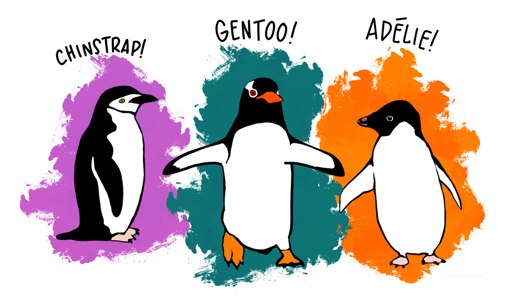
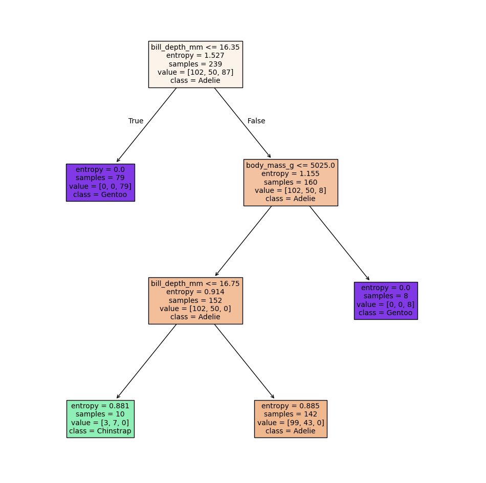
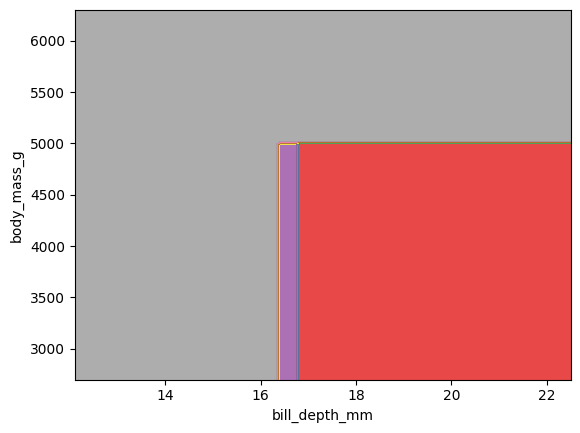
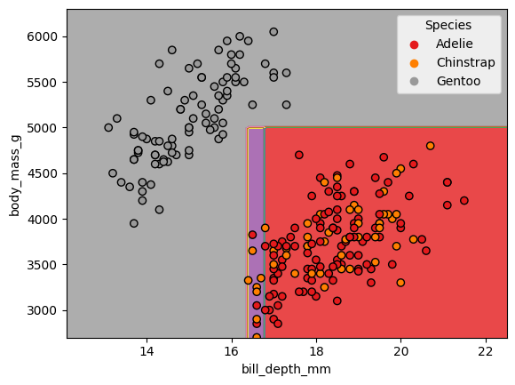
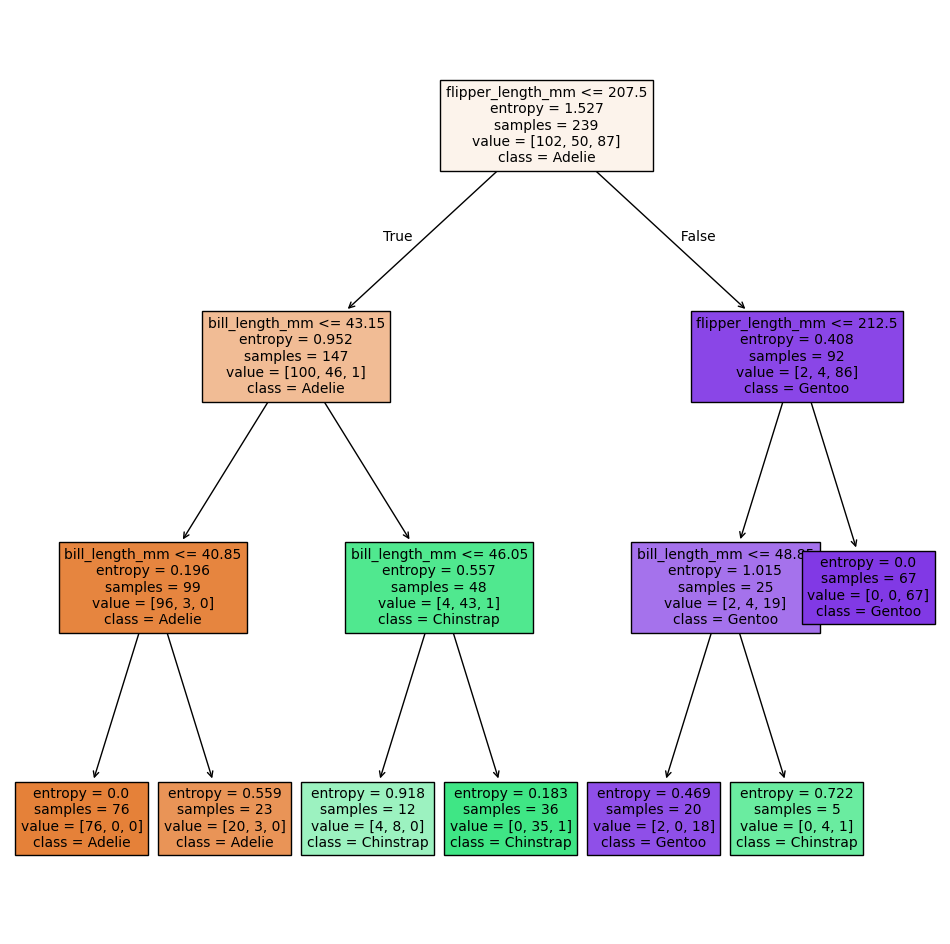
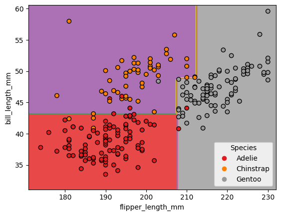
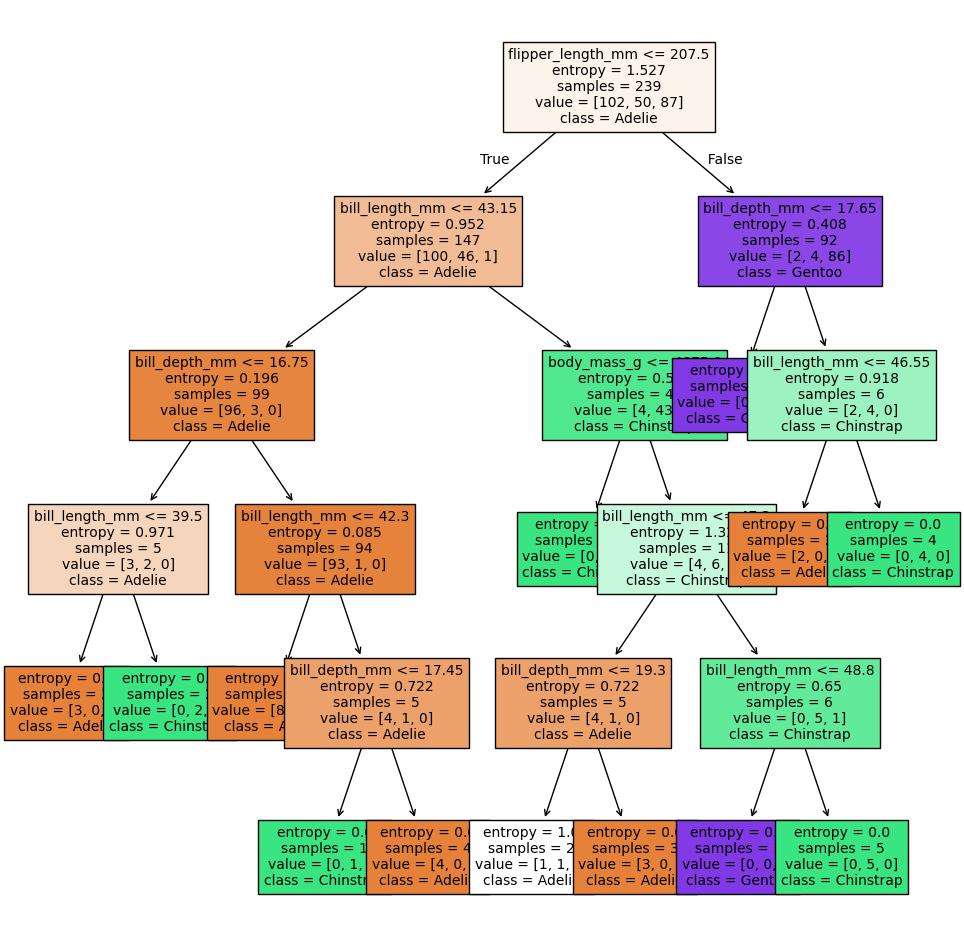
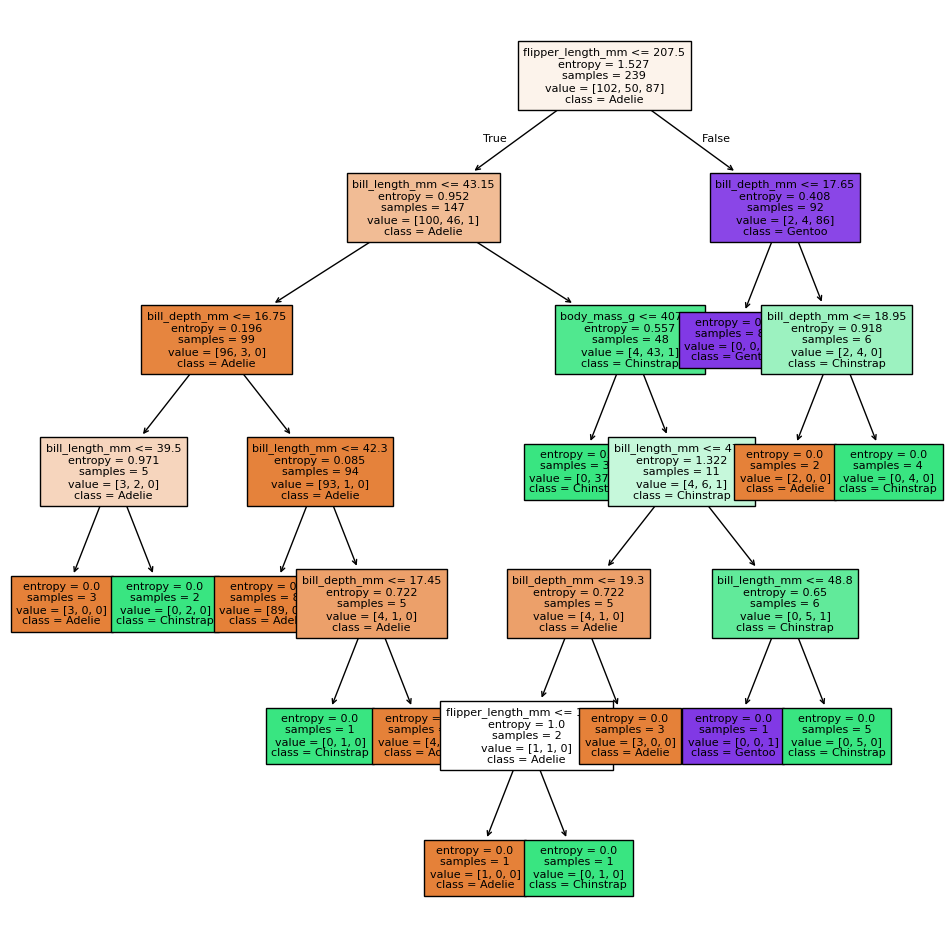
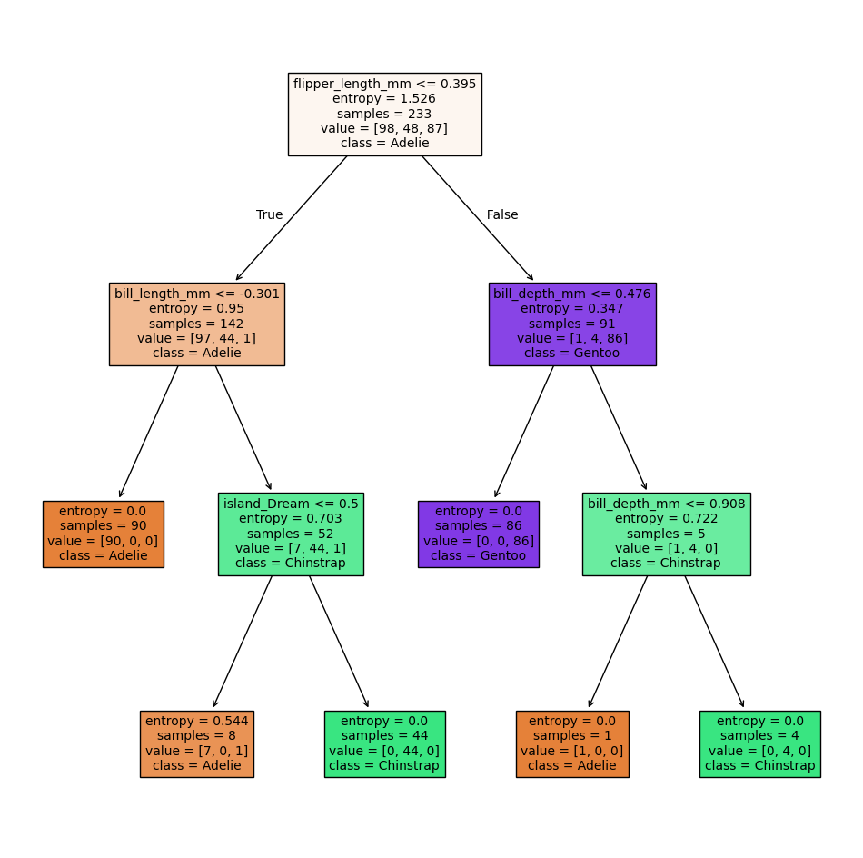
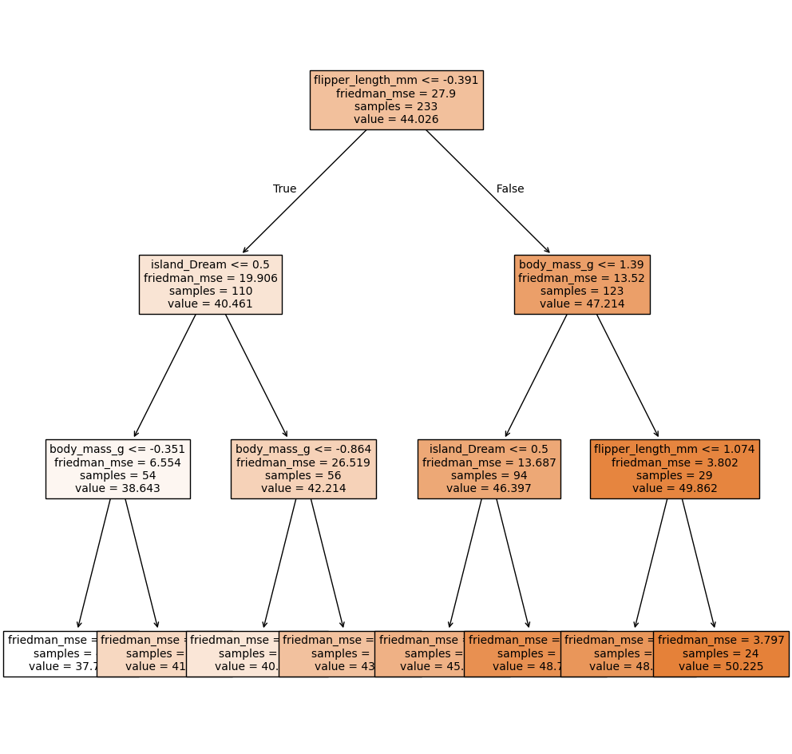

# install packages (if need be)
#%pip install palmerpenguinsSML 301
Session 6: Decision Trees
- decision tree classifiers
- decision tree boundaries
- preprocessing: one-hot encoding, standard scalar
We will explore the palmerpenguins data set (https://allisonhorst.github.io/palmerpenguins/)

import matplotlib.pyplot as plt
import numpy as np
import pandas as pd
import sklearn.tree as tree
from matplotlib.pyplot import subplots
from palmerpenguins import load_penguins
from sklearn.inspection import DecisionBoundaryDisplay
from sklearn.model_selection import train_test_split
from sklearn.tree import (DecisionTreeClassifier as DTC,
DecisionTreeRegressor as DTR,
plot_tree)
from sklearn.metrics import accuracy_score
from sklearn.preprocessing import LabelBinarizer, LabelEncoder, MinMaxScaler, OneHotEncoder, StandardScaler
penguins = load_penguins()Example 1: body mass and bill depth
Can we predict the species of a penguin using the rest of the data?
- response variable (\(y\)):
species - predictor variables (\(X\)):
bill_length_mm,bill_depth_mm, etc.
df = penguins[['species', 'bill_depth_mm', 'body_mass_g']] #load in needed columns
df = df.dropna() #then remove missing data
X = df[['bill_depth_mm', 'body_mass_g']] #explanatory variables
y = df['species'] #target variable
X_train, X_test, y_train, y_test = train_test_split(X, y, test_size = 0.3, random_state = 301)tree_maker = DTC(criterion='entropy', max_depth = 3, random_state = 301)
tree_model = tree_maker.fit(X_train, y_train)
accuracy_train = tree_model.score(X_train, y_train)
accuracy_test = tree_model.score(X_test, y_test)
print(f'train accuracy: {accuracy_train:.4f}')
print(f'test accuracy : {accuracy_test:.4f}')train accuracy: 0.8075
test accuracy : 0.7476ax = subplots(figsize=(12,12))[1]
tree.plot_tree(tree_model, filled = True, class_names = tree_model.classes_, feature_names = X.columns, fontsize= 10)
plt.show()
our_colormap = plt.cm.Set1 #https://matplotlib.org/stable/users/explain/colors/colormaps.html
DecisionBoundaryDisplay.from_estimator(
tree_model,
X,
response_method="predict",
cmap=our_colormap,
alpha=0.8
)
our_colormap = plt.cm.Set1 #https://matplotlib.org/stable/users/explain/colors/colormaps.html
DecisionBoundaryDisplay.from_estimator(
tree_model,
X,
response_method="predict",
cmap=our_colormap,
alpha=0.8
)
scatter_layer = plt.scatter(
X_train['bill_depth_mm'],
X_train['body_mass_g'],
c=LabelEncoder().fit_transform(y_train),
edgecolor="k",
cmap=our_colormap
)
handles, _ = scatter_layer.legend_elements()
plt.legend(
handles=handles,
labels=['Adelie', 'Chinstrap', 'Gentoo'],
title = "Species"
)
plt.show()
Example 2: flipper length and bill length
df = penguins[['species', 'flipper_length_mm', 'bill_length_mm']] #load in needed columns
df = df.dropna() #then remove missing data
X = df[['flipper_length_mm', 'bill_length_mm']] #explanatory variables
y = df['species'] #target variable
X_train, X_test, y_train, y_test = train_test_split(X, y, test_size = 0.3, random_state = 301)tree_maker = DTC(criterion='entropy', max_depth = 3, random_state = 301)
tree_model = tree_maker.fit(X_train, y_train)
accuracy_train = tree_model.score(X_train, y_train)
accuracy_test = tree_model.score(X_test, y_test)
print(f'train accuracy: {accuracy_train:.4f}')
print(f'test accuracy : {accuracy_test:.4f}')train accuracy: 0.9540
test accuracy : 0.9612ax = subplots(figsize=(12,12))[1]
tree.plot_tree(tree_model, filled = True, class_names = tree_model.classes_, feature_names = X.columns, fontsize= 10)
plt.show()
our_colormap = plt.cm.Set1 #https://matplotlib.org/stable/users/explain/colors/colormaps.html
DecisionBoundaryDisplay.from_estimator(
tree_model,
X,
response_method="predict",
cmap=our_colormap,
alpha=0.8
)
scatter_layer = plt.scatter(
X_train['flipper_length_mm'],
X_train['bill_length_mm'],
c=LabelEncoder().fit_transform(y_train),
edgecolor="k",
cmap=our_colormap
)
handles, _ = scatter_layer.legend_elements()
plt.legend(
handles=handles,
labels=['Adelie', 'Chinstrap', 'Gentoo'],
title = "Species"
)
plt.show()
Example 3: all numerical predictors, more depth
df = penguins[['species', 'bill_length_mm', 'bill_depth_mm', 'body_mass_g', 'flipper_length_mm']] #load in needed columns
df = df.dropna() #then remove missing data
X = df[['bill_length_mm', 'bill_depth_mm', 'body_mass_g', 'flipper_length_mm']] #explanatory variables
y = df['species'] #target variable
X_train, X_test, y_train, y_test = train_test_split(X, y, test_size = 0.3, random_state = 301)tree_maker = DTC(criterion='entropy', max_depth = 5, random_state = 301)
tree_model = tree_maker.fit(X_train, y_train)
accuracy_train = tree_model.score(X_train, y_train)
accuracy_test = tree_model.score(X_test, y_test)
print(f'train accuracy: {accuracy_train:.4f}')
print(f'test accuracy : {accuracy_test:.4f}')train accuracy: 0.9958
test accuracy : 0.9903ax = subplots(figsize=(12,12))[1]
tree.plot_tree(tree_model, filled = True, class_names = tree_model.classes_, feature_names = X.columns, fontsize= 10)
plt.show()
Example 4: allow all depth?
tree_maker = DTC(criterion='entropy', random_state = 301) #removed max_depth
tree_model = tree_maker.fit(X_train, y_train)
accuracy_train = tree_model.score(X_train, y_train)
accuracy_test = tree_model.score(X_test, y_test)
print(f'train accuracy: {accuracy_train:.4f}') #perfect fit?
print(f'test accuracy : {accuracy_test:.4f}')train accuracy: 1.0000
test accuracy : 0.9709ax = subplots(figsize=(12,12))[1]
tree.plot_tree(tree_model, filled = True, class_names = tree_model.classes_, feature_names = X.columns, fontsize= 8)
plt.show()
Using Categorical Variables
penguins.dtypesspecies object
island object
bill_length_mm float64
bill_depth_mm float64
flipper_length_mm float64
body_mass_g float64
sex object
year int64
dtype: objectdf = penguins.dropna()
X = df.drop('species', axis = 1) #explanatory variables
y = df['species'] #target variable
X_num = X.select_dtypes(include = 'number')
X_cat = X.select_dtypes(include = 'object') #some recommend recasting as 'category'
print(X_num.dtypes)
print(X_cat.dtypes)bill_length_mm float64
bill_depth_mm float64
flipper_length_mm float64
body_mass_g float64
year int64
dtype: object
island object
sex object
dtype: objectLabel Encoding
# https://stackoverflow.com/questions/24458645/label-encoding-across-multiple-columns-in-scikit-learn
X_cat_label = pd.DataFrame({col: X_cat[col].astype('category').cat.codes for col in X_cat}, index=X_cat.index)
print(X_cat.head())
print(X_cat_label.head())
# caution: if you actually have ordinal data (e.g. Likert Scale), replace the column with a dictionary of values instead island sex
0 Torgersen male
1 Torgersen female
2 Torgersen female
4 Torgersen female
5 Torgersen male
island sex
0 2 1
1 2 0
2 2 0
4 2 0
5 2 1One-Hot Encoding
X_cat_csr = OneHotEncoder().fit_transform(X_cat)
X_cat_hot = pd.DataFrame.sparse.from_spmatrix(X_cat_csr)
X_cat_hot.columns = OneHotEncoder().fit(X_cat).get_feature_names_out()
print(X_cat.head())
print(X_cat_hot.head()) island sex
0 Torgersen male
1 Torgersen female
2 Torgersen female
4 Torgersen female
5 Torgersen male
island_Biscoe island_Dream island_Torgersen sex_female sex_male
0 0 0 1.0 0 1.0
1 0 0 1.0 1.0 0
2 0 0 1.0 1.0 0
3 0 0 1.0 1.0 0
4 0 0 1.0 0 1.0Rescaling Numerical Data
MinMax Scalar
X_num_MM = MinMaxScaler().fit_transform(X_num)
X_num_MM = pd.DataFrame(X_num_MM, columns = X_num.columns)
print(X_num.head())
print(X_num_MM.head()) bill_length_mm bill_depth_mm flipper_length_mm body_mass_g year
0 39.1 18.7 181.0 3750.0 2007
1 39.5 17.4 186.0 3800.0 2007
2 40.3 18.0 195.0 3250.0 2007
4 36.7 19.3 193.0 3450.0 2007
5 39.3 20.6 190.0 3650.0 2007
bill_length_mm bill_depth_mm flipper_length_mm body_mass_g year
0 0.254545 0.666667 0.152542 0.291667 0.0
1 0.269091 0.511905 0.237288 0.305556 0.0
2 0.298182 0.583333 0.389831 0.152778 0.0
3 0.167273 0.738095 0.355932 0.208333 0.0
4 0.261818 0.892857 0.305085 0.263889 0.0Standard Scalar
X_num_std = StandardScaler().fit_transform(X_num)
X_num_std = pd.DataFrame(X_num_std, columns = X_num.columns)
print(X_num.head())
print(X_num_std.head()) bill_length_mm bill_depth_mm flipper_length_mm body_mass_g year
0 39.1 18.7 181.0 3750.0 2007
1 39.5 17.4 186.0 3800.0 2007
2 40.3 18.0 195.0 3250.0 2007
4 36.7 19.3 193.0 3450.0 2007
5 39.3 20.6 190.0 3650.0 2007
bill_length_mm bill_depth_mm flipper_length_mm body_mass_g year
0 -0.896042 0.780732 -1.426752 -0.568475 -1.283742
1 -0.822788 0.119584 -1.069474 -0.506286 -1.283742
2 -0.676280 0.424729 -0.426373 -1.190361 -1.283742
3 -1.335566 1.085877 -0.569284 -0.941606 -1.283742
4 -0.859415 1.747026 -0.783651 -0.692852 -1.283742Transformed Data
X_before = X
X = pd.concat([X_num_std, X_cat_hot], axis = 1)
print(X_before.head())
print(X.head()) island bill_length_mm bill_depth_mm flipper_length_mm body_mass_g \
0 Torgersen 39.1 18.7 181.0 3750.0
1 Torgersen 39.5 17.4 186.0 3800.0
2 Torgersen 40.3 18.0 195.0 3250.0
4 Torgersen 36.7 19.3 193.0 3450.0
5 Torgersen 39.3 20.6 190.0 3650.0
sex year
0 male 2007
1 female 2007
2 female 2007
4 female 2007
5 male 2007
bill_length_mm bill_depth_mm flipper_length_mm body_mass_g year \
0 -0.896042 0.780732 -1.426752 -0.568475 -1.283742
1 -0.822788 0.119584 -1.069474 -0.506286 -1.283742
2 -0.676280 0.424729 -0.426373 -1.190361 -1.283742
3 -1.335566 1.085877 -0.569284 -0.941606 -1.283742
4 -0.859415 1.747026 -0.783651 -0.692852 -1.283742
island_Biscoe island_Dream island_Torgersen sex_female sex_male
0 0 0 1.0 0 1.0
1 0 0 1.0 1.0 0
2 0 0 1.0 1.0 0
3 0 0 1.0 1.0 0
4 0 0 1.0 0 1.0 Example: all predictors, now with categorical data
X_train, X_test, y_train, y_test = train_test_split(X, y, test_size = 0.3, random_state = 301)tree_maker = DTC(criterion='entropy', max_depth = 3, random_state = 301)
tree_model = tree_maker.fit(X_train, y_train)
accuracy_train = tree_model.score(X_train, y_train)
accuracy_test = tree_model.score(X_test, y_test)
print(f'train accuracy: {accuracy_train:.4f}')
print(f'test accuracy : {accuracy_test:.4f}')train accuracy: 0.9957
test accuracy : 0.9600c:\Users\freex\AppData\Local\Programs\Python\Python313\Lib\site-packages\sklearn\utils\validation.py:919: UserWarning: pandas.DataFrame with sparse columns found.It will be converted to a dense numpy array.
warnings.warn(
c:\Users\freex\AppData\Local\Programs\Python\Python313\Lib\site-packages\sklearn\utils\validation.py:919: UserWarning: pandas.DataFrame with sparse columns found.It will be converted to a dense numpy array.
warnings.warn(
c:\Users\freex\AppData\Local\Programs\Python\Python313\Lib\site-packages\sklearn\utils\validation.py:919: UserWarning: pandas.DataFrame with sparse columns found.It will be converted to a dense numpy array.
warnings.warn(ax = subplots(figsize=(12,12))[1]
tree.plot_tree(tree_model, filled = True, class_names = tree_model.classes_, feature_names = X.columns, fontsize= 10)
plt.show()
Decision Tree Regressor
- response variable:
bill_length_mm - explanatory variables:
island,body_mass_g,flipper_length_mm,sex
df = penguins[['bill_length_mm', 'body_mass_g', 'flipper_length_mm', 'island', 'sex']] #load in needed columns
df = df.dropna() #then remove missing data
X = df[['body_mass_g', 'flipper_length_mm', 'island', 'sex']] #explanatory variables
y = df['bill_length_mm'] #target variable
X_num = X.select_dtypes(include = 'number')
X_cat = X.select_dtypes(include = 'object') #some recommend recasting as 'category'
X_cat_csr = OneHotEncoder().fit_transform(X_cat)
X_cat_hot = pd.DataFrame.sparse.from_spmatrix(X_cat_csr)
X_cat_hot.columns = OneHotEncoder().fit(X_cat).get_feature_names_out()
X_num_std = StandardScaler().fit_transform(X_num)
X_num_std = pd.DataFrame(X_num_std, columns = X_num.columns)
X = pd.concat([X_num_std, X_cat_hot], axis = 1)
X_train, X_test, y_train, y_test = train_test_split(X, y, test_size = 0.3, random_state = 301)tree_maker = DTR(criterion='friedman_mse', max_depth = 3, random_state = 301)
tree_model = tree_maker.fit(X_train, y_train)
R2_train = tree_model.score(X_train, y_train) #coefficient of determination
R2_test = tree_model.score(X_test, y_test)
print(f'train R2: {R2_train:.4f}')
print(f'test R2 : {R2_test:.4f}')train R2: 0.5869
test R2 : 0.4848c:\Users\freex\AppData\Local\Programs\Python\Python313\Lib\site-packages\sklearn\utils\validation.py:919: UserWarning: pandas.DataFrame with sparse columns found.It will be converted to a dense numpy array.
warnings.warn(
c:\Users\freex\AppData\Local\Programs\Python\Python313\Lib\site-packages\sklearn\utils\validation.py:919: UserWarning: pandas.DataFrame with sparse columns found.It will be converted to a dense numpy array.
warnings.warn(
c:\Users\freex\AppData\Local\Programs\Python\Python313\Lib\site-packages\sklearn\utils\validation.py:919: UserWarning: pandas.DataFrame with sparse columns found.It will be converted to a dense numpy array.
warnings.warn(ax = subplots(figsize=(12,12))[1]
tree.plot_tree(tree_model, filled = True, feature_names = X.columns, fontsize= 10)
plt.show()
tree_maker = DTR(criterion='friedman_mse', max_depth = 20, random_state = 301)
tree_model = tree_maker.fit(X_train, y_train)
R2_train = tree_model.score(X_train, y_train)
R2_test = tree_model.score(X_test, y_test)
print(f'train R2: {R2_train:.4f}')
print(f'test R2 : {R2_test:.4f}') #overfitting!train R2: 0.9899
test R2 : 0.2770c:\Users\freex\AppData\Local\Programs\Python\Python313\Lib\site-packages\sklearn\utils\validation.py:919: UserWarning: pandas.DataFrame with sparse columns found.It will be converted to a dense numpy array.
warnings.warn(
c:\Users\freex\AppData\Local\Programs\Python\Python313\Lib\site-packages\sklearn\utils\validation.py:919: UserWarning: pandas.DataFrame with sparse columns found.It will be converted to a dense numpy array.
warnings.warn(
c:\Users\freex\AppData\Local\Programs\Python\Python313\Lib\site-packages\sklearn\utils\validation.py:919: UserWarning: pandas.DataFrame with sparse columns found.It will be converted to a dense numpy array.
warnings.warn(